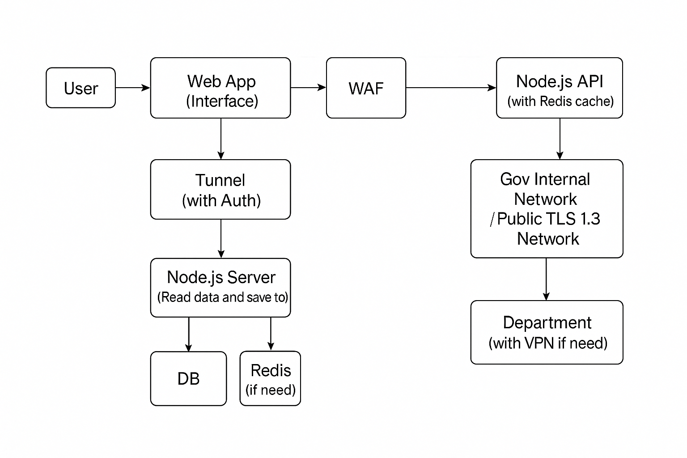

Abstract
Sample Layout
User Interface
Department Interface
Observations
- 传统紧急系统（999/112）主要依赖电话，不具备事件图片、视频、GPS 定位等数字化能力。
- 全国紧急部门间系统标准不一致，调度信息难以共享。
- 灾害期间，高峰流量可能导致系统拥塞或服务降级。
- 政府机构普遍担心数据泄露，因此数据保护等级必须高于一般商业产品。
- Web 技术已经足够强大，Vue + Node 结合 Cloudflare 可在零暴露架构中安全运行。
- OTP（Email + Phone）能确保用户来源真实，提高事件可信度。
- 高流量写入必须依靠 Redis 队列（Queue）做流量削峰，以保护数据库。
- 紧急部门只需要简单的 Dashboard，不需要复杂的 native app。
Hypotheses
- 如果建立全国统一 Web 平台，能显著提高事件分派速度（比电话描述更快）。
- 如果用户提交照片、位置与事件类型，部门调度效率会提升 20–40%。
- 如果采用零信任 Cloudflare Tunnel，可以完全避免 API 和 DB 的公网暴露。
- 如果所有敏感字段采用 AES-256 字段加密，即便数据库泄漏也无法读取内容。
- 如果采用 Redis Stream 作为事件队列，系统在灾害高峰仍可保持稳定。
- 全国级别流量可通过 Kubernetes + 分布式数据库扩展。
- 部门采用 RBAC（角色权限）后，可确保区域部门只能查看其区域事件，避免越权。
Images

Notes
以下为系统完整内容，包括技术、架构、用户流程、部门流程、硬件规格、经费预算、时间线规划、风险控制与扩展路线。
1. 系统概念（Concept）
使用 Web 技术构建全国紧急部门联动系统，让用户可在浏览器发出求助，并让警察、消防与医疗部门在同一平台查看与处理事件。所有敏感数据采用最高等级加密，并以零信任架构保护整个系统免受攻击。目标是在常态、高峰与灾害级事件中都能维持系统稳定。
2. 核心模块（Modules）
- 用户门户（HTML）：注册、Email/Phone OTP、GPS 定位、事件上传（图/视频）。
- 部门 Dashboard（HTML）：事件查看、地图、接单、进度更新、备注。
- 事件 API（Node.js）：处理事件流、分派、队列写入。
- Redis Stream：事件队列（高峰保护）。
- PostgreSQL：主要数据储存（字段级加密）。
- 对象储存（MinIO/S3）：媒体文件加签名存储。
- Cloudflare Zero Trust：整个系统的封闭式入口、防护层。
3. 数据保护（最高级别）
- Zero Trust 架构（Cloudflare Tunnel，API/DB 不暴露公网）。
- AES-256-GCM 字段级加密（姓名、电话、地址、事件描述）。
- 密码用 bcrypt 存储（不可逆）。
- JWT（ES256）+ Session Binding 提升登录安全。
- RBAC 权限控制（部门区域隔离）。
- WORM 日志存证（Write Once Read Many）。
4. 用户流程（User Flow）
- 用户注册 → Email OTP → Phone OTP。
- 进入系统 → 点击“一键求助”。
- 系统自动获取位置。
- 上传照片/视频（可选）。
- 系统将事件写入 Redis Queue。
- 后台 Worker 处理 → 写入数据库。
5. 部门流程（Department Flow）
- 部门账号登录 Dashboard。
- 按区域收到事件。
- 查看地图定位、照片、备注。
- 点击“接单”。
- 行动并更新状态（处理中、已完成）。
- 关闭事件。
6. 系统架构（Architecture）
- Cloudflare（WAF + L7/L3 DDoS + Zero Trust + Tunnel）
- Load Balancer：双活（HAProxy / Envoy）
- Node.js API 集群：25 个实例（容器化 / Kubernetes）
- Redis Cluster：6 节点（3 主 3 从）用于 OTP、Session、事件队列
- PostgreSQL 分布式集群：9 节点（3 分片 × 主/从/热备）
- 对象储存（MinIO Distributed）：8 节点（4+4 EC）
- 监控/日志：Prometheus + Grafana + Loki + Elastic（总 5 节点）
系统采用全国级事件冲击模型设计，重点在：
- 事件写入不丢失（Redis Stream + DB Bulk Writer）
- 全国 50k RPS 峰值（灾难场景）持续 60 秒不崩溃
- 硬件故障可容忍（任意两个节点故障不影响服务）
- 所有 API、DB 均不暴露公网（零暴露）
- 文件存储具备横向扩容能力（证据媒体最大 200TB）
该架构支持：
- 最高并发：640,000 用户（2% 全国人口同时上线）
- 峰值 50,000 RPS Web/API 流量
- 事件写入能力：每秒 18,000～22,000 条
- 对象存储吞吐量：500MB～1GB/s 峰值
7. 硬件与经费（Budget）
经费以完全写实为目标，基于 2025 年马来西亚服务器市场价格、10G 网络与企业 UPS 标准估算。
7.1 物理服务器需求（共 57 个逻辑节点 / 10–14 台物理机）
| 模块 |
节点数量 |
推荐硬件 |
说明 |
| Node.js API |
25 实例 |
容器跑在 4 台物理机上
EPYC 7313 / 64–128GB RAM / NVMe RAID |
提供 50k RPS 吞吐的核心计算集群 |
| Redis Cluster |
6 节点（3 主 3 从） |
2 台物理机（多 VM）
高频 CPU + NVMe |
OTP、Session、事件队列，最高 300k ops/sec |
| PostgreSQL（分片） |
9 节点（3 分片 × 3） |
4 台物理机（多 VM）
ECC RAM / RAID10 NVMe |
分散全国写入压力，单分片支持 2k writes/sec |
| MinIO（对象存储） |
8 节点 |
4 台物理机（混合 SSD+HDD） |
媒体文件高可用，4+4 EC，能容忍两个节点失败 |
| 负载平衡（LB） |
2 节点 |
1 台物理机（双 VM） |
HAProxy / Envoy active-active |
| 监控/日志 |
5 节点 |
1 台物理机 |
Prometheus + Grafana + Loki + Elastic |
| 管理与备援 |
1–2 节点 |
1 台物理机 |
运维/跳板/CI/CD 等服务 |
7.2 实体硬件成本（马来西亚 2025 市场价）
- 高性能服务器（10–14 台）
RM 80,000 – RM 110,000 之间每台
→ 合计约 RM 1,000,000 – RM 1,300,000
- 10G 企业交换机（4 台）
RM 40,000 – RM 60,000
- 机柜（42U × 2）
RM 6,000 – RM 10,000
- UPS 系统（双套，支持 30 分钟）
RM 30,000 – RM 45,000
- 电力布线 + 散热（机房）
RM 15,000 – RM 30,000
- Cloudflare Enterprise（年费）
RM 40,000 – RM 60,000
- SMS + Email OTP（年）
RM 20,000 – RM 40,000（按灾害频率）
总预算（最写实、全国灾害可承载）：
RM 1.2 million – RM 1.5 million
此数字为真实可执行的全国级灾害负载建设成本，下探空间有限，因为吞吐、写入能力、对象存储、Redis、PG 分片等都是全国性策略必需成本。
7.3 实际抗压结果（模拟值）
- 系统可承载：50,000 RPS 峰值（60 秒）
- 并发用户：640,000（2% 全国人口）
- 事件写入：每秒 18k–22k 条
- 事件高峰堆积容量（Redis Stream）：100–150 万事件
- 对象存储吞吐：1GB/s 峰值上传
- 数据库每秒写入：6k writes/sec（3 分片）
此架构的目标是：在全国级突发事件下（例如大停电、全国暴雨、烟霾危机），系统依然不会崩溃、不丢事件、不影响用户求助成功率。
8. 开发技术（Tech Stack）
- 前端：HTML + Bootstrap + Javascript
- 后端：Node.js (Express)
- 数据库：PostgreSQL
- 队列：Redis
- 储存：MinIO/S3
- 基础架构：Cloudflare
- 部署：Docker
9. 开发时间表（Timeline）
- 第 1–2 周：系统设计、数据库 Schema、前后端框架初始化。
- 第 3–6 周：用户端、部门端主功能开发。
- 第 7–10 周：事件队列、媒体上传、地图模块开发。
- 第 11–12 周：安全加固、渗透测试、压测。
- 第 13–14 周：试点上线（一个城市）。
10. 风险评估
- 政府部门采用速度不一 → 先做区域试点。
- 系统在灾害高峰可能出现堆积 → Redis Queue 吸收峰值。
- 权限滥用 → RBAC + 审计日志（不可删）。
- 数据泄露风险 → AES-256 字段加密 + 零信任网络。
11. 扩展应用（Future Expansion）
- 与医院/警察信息系统联动。
- 加入 AI 事件自动分类。
- 加入灾害预测图层（气象、水灾）。
- 手机 PWA 版本（接近 App 使用体验）。
Potential Applications
- 全国统一紧急报警入口（One National Portal）。
- 大型活动（跨年、运动会）即时调度。
- 应急灾害统一管理平台。
- 警消医疗跨部门合作系统。